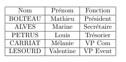

C'est un système de composition de haute qualité; il comprend des fonctionnalités conçues pour la production de documentation technique et scientifique. LaTeX est l'un des standards pour la communication et la publication de documents scientifiques. Libre et gratuit, vous pouvez utiliser LaTex facilement. Il est assez aisé de l'installer sur sa machine. Cependant plusieurs éditeurs en ligne existent.
Basé sur un système de balisage, semblable au langage XML (tu verras ça plus tard dans le master ;)), il permet l'écriture de rapport facilement (Bon OK, il faut un peu de bouteille avant que ça soit facile, mais ça vient vite). L'idée est de se soucier que sur le contenu et non sur la forme et le rendu (comme le fait Word).
Pour vous faciliter la tâche, nous allons utiliser un éditeur en ligne. Ce dernier sera OverLeaf. Cet éditeur est très utilisé (au moins dans le Master ahah). Le truc cool est qu'on peut travailler à plusieurs sur le même document : gavé pratique pour les rapport en groupe ;).
Tout d'abord, il vous faudra créé un compte sur le site OverLeaf. Jusque là ça devrait le faire.
Il avait fait une capture de son sommaire ouf!
Il faut que réussisse à refaire ce sommaire. Je te laisse créer les chapitres et les sections.
Pour ajouter le sommaire au rapport, il faut utiliser la commande \tableofcontents avant le premier chapitre. Mais Bobby se souvient qu'il faut modifier cette commande car elle écrit "Table des matières" et il n'aime pas du tout. Il préfère "Sommaire". Aussi, de manière générale le sommaire n'est pas numéroté et la pagination débute qu'au premier chapitre. Du coup il faut écrire :
\renewcommand{\contentsname}{Sommaire} # Renomme "Table des matières" en "Sommaire"
\tableofcontents # Affiche la table des matières
\thispagestyle{empty} # Permet d'enlever le numéro de page du sommaire
\newpage # Débute une nouvelle page
\setcounter{page}{1} # Réinitialise le compteur de page à 1
\chapter{Les Cours en M1} # Déclaration du chapitre
Bobby avait aussi pris quelques notes pendant la rédaction de son rapport. Il est noté que :
Bobby se souvient avoir pris les activités sur le site de son amie Camille.
Il avait fait une liste des choses à faire à Bordeaux. Je te laisse chercher un peu pour trouver comment on fait des listes sur LaTeX. Google est ton ami :)
Bobby avait fait un tableau récapitulatif des membres du bureau de l'association AMBB. Il ressemblait à l'image ci-dessous. Bon courage pour trouver comment on fait. Que le sort puisse t'être favorable!
Bon si tu galères trop, tu peux allez voir ce site, c'est plutôt cool.
{kind=link}
{kind=link}